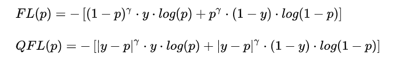
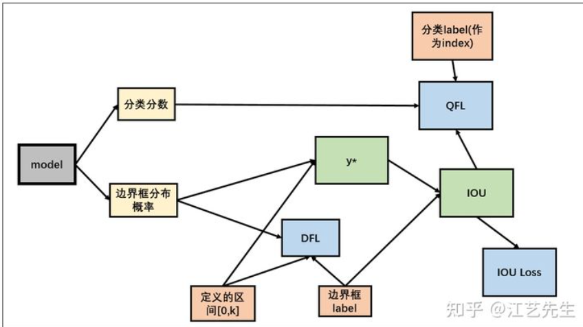
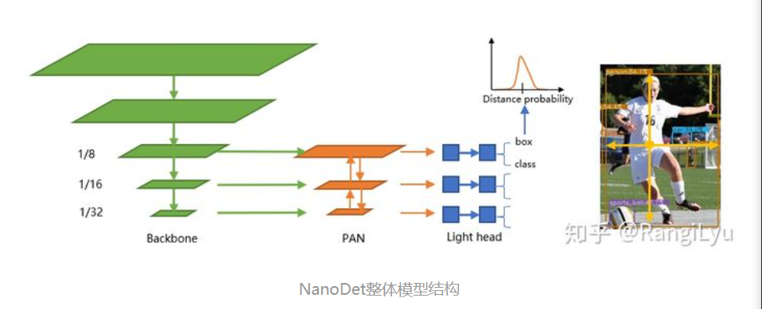
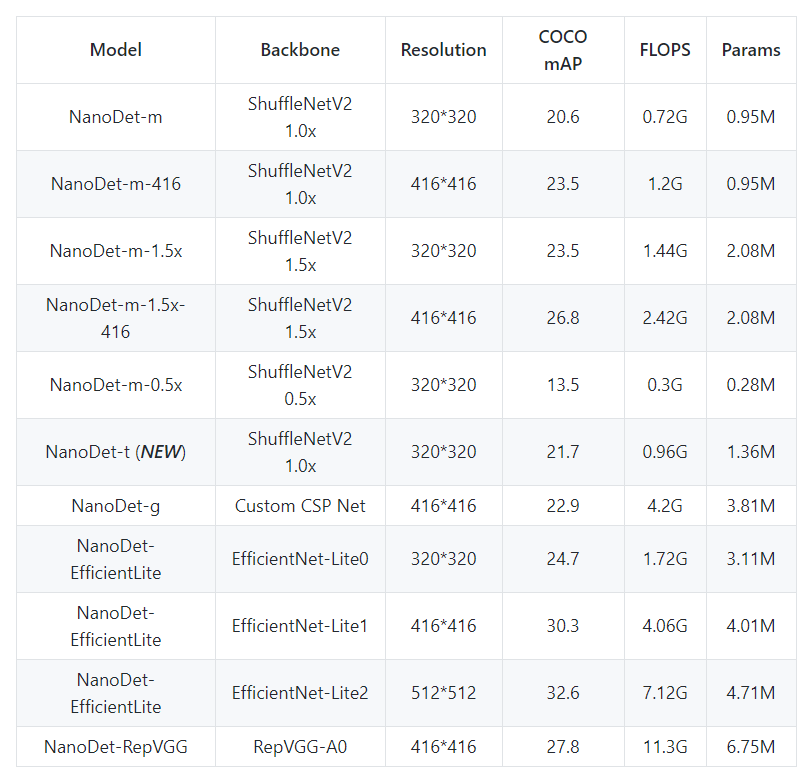

NanoDet
该网络结构是2020年底出来的一种轻量级的目标检测网络，刚出来就刷新了目标检测的相关记录。该网络基于anchor free， 且使用多种深度学习框架进行硬件端部署 包括ncnn mnn等。该网络也开启我模型部署化的研究之路，是研究之旅中重要一篇，值得花时间研究。
Generalized Focal loss损失函数
背景知识
正常来说，目标检测分类和定位的训练是分开的。
训练分类任务时，设类别有n个，用长度为n的one-hot分类标签向量与n个sigmoid预测分类分数计算交叉熵损失，为解决正负样本不平衡一般用Focal loss代替交叉熵损失。
训练定位任务时，基于anchor的方法通常用预测的边界框位置（x1,x2,y1,y2）与定位标签计算IOU（GIOU、DIOU、CIOU） loss，基于anchor free的方法通常用预测边界框四边与当前位置的距离（l,r,t,d）与定位标签计算L1（L2、smooth L1、MSE等） loss。
Generalized Focal loss（利用IoU指导分类训练）
预测的边界框与定位标签计算得到的IOU，不仅用于计算IOU loss，还用来作为分类的标签，即one-hot分类标签的1改成IOU，再计算分类损失。 这样做可以将IOU作为定位质量估计与分类结合，IOU较低时说明定位很差，那么它的分类分数应该是要比较小才合理。但是在优化时，Focal Loss只支持0或者1这样的离散类别label。因此文中将Focal Loss改为连续型，称为QFL。FL与QFL对比如下，发现修改不大。

于是本文不直接预测y*，而是预测边界框的分布概率预测。具体的，取区间[0,k]（如k=16，可根据数据集改变），将定位标签l,r,t,b除以stride后一般会落到区间[0,k]的某个区间[i,i+1]，因此网络输出k+1个sigmoid作为定位落在区间节点的概率。当定位标签落在区间[i,i+1]时，预测的边界框分布概率p(i),p(i+1)理论上应该较大。因此增加了损失函数DFL：

基于任意one-stage 检测器上，调整框本身与框质量估计的表示，同时用泛化版本的GFocal Loss训练该改进的表示
检测头轻量化
在移动端进行优化首先考虑检测头：使用共享权重的检测头，对FPN出来的多尺度feature map使用同一组卷积预测检测框， 然后每一层使用一个可学习的Scale值作为系数，对预测框进行缩放
优势就是参数量降为不共享权重状态下的1/5
归一化方式选择BN，因为BN在推理时能够将归一化的参数直接融合进卷积种，而GN不行
使用深度可分离卷积替换普通卷积， 并减少卷积堆叠的数量，压缩通道数，并用同一组卷积计算边框回归和分类，并split成两份
FPN改进
EfficientDet使用了BiFPN，yolo v4和yolo v5使用了PAN，除此之外还有BalancedFPN等等。BiFPN虽然性能强大，但是堆叠的特征融合操作势必会带来运行速度的降低。PAN只有自上而下和自下而上两条通路，非常的简洁，是轻量级模型特征融合的好选择。
作者基于PAN进行改进： * 完全去掉PAN中的所有卷积，保留从骨干网络特征提取后的1*1卷积，进行特征通道维度对齐 * 上采样和下采样均使用插值来完成 * 代替concatenate，选择多尺度的feature map进行直接相加
Backbone选择
评估各种模型后选择了ShuffleNetV2 1.0x， 去掉最后一层卷积层，并抽取8 16 32倍下采样的特征输入进PAN做多尺度特征融合。 整体看起来大致分为backbone PAN 以及最后的后处理输出，和之前的检测网络大同小异 最终整体框架图: 
模型性能
在320x320输入分辨率的情况下，整个模型的Flops只有0.72B，yolov4-tiny则有6.96B，小了将近十倍！模型的参数量也只有0.95M 权重文件在使用ncnn optimize进行16位存储之后，只有1.8mb。
